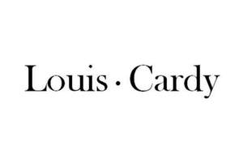

Trade Mark Journal No.2025/019 9 May 2025
UK00004193893 24 April 2025 (3,9,14,18,25,26)

- Class 3
- Shampoo; stain removers; oils for perfumes and scents; lipsticks; dentifrices; potpourris [fragrances]; cosmetics; hair dyes; perfumes; beauty masks.
- Class 9
- Biometrics fingerprint door locks; eyeglasses; sunglasses; spectacle cases; Mobile phone chargers; Mobile power (rechargeable battery); contact lenses; spectacle frames; headset; Video projectors.
- Class 14
- Jewellery boxes; bracelets [jewellery, jewelry (Am.)]; wristwatches; earrings; necklaces [jewellery, jewelry (Am.)]; jewellery; Crystal jewelry; precious stones; precious metals, unwrought or semi-wrought; jade.
- Class 18
- School bags; Rucksacks; Travelling bags; Handbags; Trunks being luggage; Umbrellas; Bags for sports; Briefcases; pocket wallets; Evening bags.
- Class 25
- Clothing; layettes [clothing]; footwear; caps being headwear; hosiery; scarfs; Belts for clothing ; underwear; underpants; pajamas (Am.).
- Class 26
- Fancy goods [embroidery]; top-knots [pompoms]; charms, other than for jewellery, key rings or key chains; hair barrettes; false hair; artificial flowers; decorative articles for the hair; hair extensions; belt clasps; Hair curlers, electric and non-electric, other than hand implements.
YAN XIUMIN
Representative: Witmart Ltd.